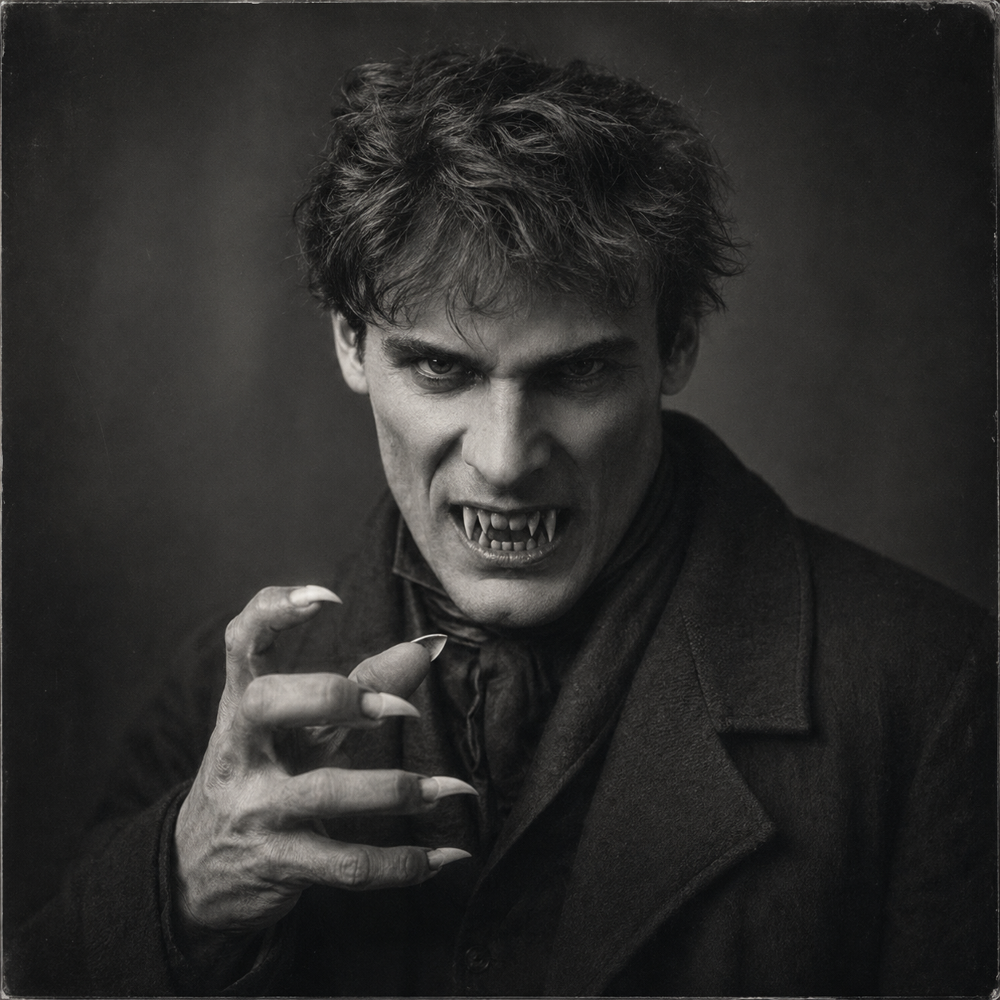

Edwin March
Trench Form
The war made something in him that cannot be entirely explained as biology - DR 10 plus bullet invulnerability, claws and teeth, Berserk and Bloodlust running close to the surface, and the same man's obsessions driving a body he neither chose nor entirely controls.
18 / 14
14
11
15 / 16
7
7.25

Powers
- DR 10 (Everything) [30]: absorbs impact, blades, and most 1923-era trauma. Combined with the invulnerability below, conventional firearms are operationally ineffective against this form.
- Invulnerability (Bullets) [100]: direct bullet immunity. In the 1923 context - pistols, rifles, shotguns - this form simply does not go down from ranged fire. The party has to survive or contain it; shooting does not help.
- Hard to Kill 4 [20]: +4 to HT survival rolls. What survives bullet impact also survives the margin that normally finishes a fight.
- Claws (Talons) [40]: imp 1d+2 / cut 3d - the primary close-combat output of the form. Against targets without significant DR, each hit is serious.
- Sharp Teeth [5]: cut 1d+2 - secondary bite attack available in close combat.
- Berserk [-15] and Bloodlust [-10]: the form's governing psychology. It does not choose targets carefully. Combat Reflexes, Fit, and Strong Will are all still present - they are Edwin's, not the form's invention - but Berserk and Bloodlust override tactical decision-making.
FRH Package
Note: This is the Alternate Form stat block. The full FRH package - Patron [60], Duty [-25], Enemy [-60] - is carried by Edwin's human form. In the Trench Form, the institutional affiliations and social obligations remain notionally present but cannot be exercised. Edwin's player still directs the form, but Edwin's contacts, his Royal British Legion network, and his human social leverage are unavailable until he returns to himself.
- Patron (Followers of the Right Hand) (15 or less) [60]: still notionally present in this form; operationally inaccessible.
- Duty (15 or less) [-25]: present. Involuntary; Extremely Hazardous.
- Enemy (Unknown Enemies of FRH) [-60]: present. Unknown; Access to Magic in Non-magical World.
Required Secret Power
This sheet IS the required secret power.
The Alternate Form (Trench Survival Organism) [264] is the entire secret of Edwin March. The human form carries Secret (Trench Form) [-20] and Addiction (Trench Form) [-25] as its cost. This sheet documents what that secret looks like when it surfaces.
The [264] point cost of the Alternate Form advantage in Edwin's human sheet represents the full mechanical weight of this form relative to his human stats. Discovery of this form ends every social and institutional position Edwin holds simultaneously.
Required Secret Society
Patron (Royal British Legion - Secret) (9 or less) [5] is carried by Edwin's human form. This form cannot access it.
The Royal British Legion affiliation requires the social identity, memory, and institutional relationships that belong to the human Edwin. In this state, those connections are unavailable. If the party needs Edwin's Legion contact while he is in Trench Form, they are out of luck until he returns to himself.
FRH does not satisfy the secret-society requirement.
How the Trench Form Operates
- DR 10 + Invulnerability to Bullets makes this form effectively immune to 1923-era small arms. Pistols and rifles will not put it down. The party's firearms become useless against their own ally.
- Berserk means that after taking damage, the form attacks the nearest available target regardless of affiliation. The party is not exempt. This is not Edwin's choice.
- Bloodlust means that downed opponents are not left alone. Neutralizing the form requires either separating it from the field, restraint methods that work against ST 18 and DR 10, or waiting for the episode to exhaust itself.
- IQ drops to 11 (from Edwin's 13). Most of his investigative skills degrade accordingly - Research still reads at 13, which may be a residue of purpose bleeding through the form.
- The form retains Edwin's quirks, Sense of Duty, Flashbacks, and Obsession. Something of the man remains. It is not enough to steer the form, but it is enough to make the aftermath complicated.
- Edwin's player controls this form. The form's Berserk and Bloodlust create strong constraints on decision-making, but the player remains in the chair - unlike Joe Bob Gray's werewolf, which the GM runs because the character has no memory of being human and no mechanism to direct himself.
Advantages
Claws (Talons) [40]; Combat Reflexes [15]; DR 10 (Everything) [30]; Fit [5]; Hard to Kill 4 [20]; High Pain Threshold [10]; Invulnerability (Bullets) [100]; Lang: English (Native) [0]; Patron (Followers of the Right Hand) (15 or less) [60]; Sharp Teeth [5]; Strong Will +2 [8].
Disadvantages
Berserk [-15]; Bloodlust [-10]; Duty (15 or less) [-25]; Enemy (Unknown Enemies of FRH) [-60]; Flashbacks [-10]; Monstrous [-25]; Obsession 1 (Learn what the war made of him) [-5]; Sense of Duty (People under his protection) [-10].
Note: Addiction (Trench Form), Secret (Trench Form), and Secret (Royal British Legion) are human-form constructs and do not appear in this form's stats.
Quirks
Sleeps lightly and wakes at distant thunder; Keeps old tools polished and wrapped in cloth; Eats quickly, as if the meal may end abruptly; Distrusts smooth officers and easy promises; Goes quiet when anyone jokes about shell shock.
These are Edwin's quirks. Whether they persist in Trench Form is a question the campaign may choose to answer.
Investigative Role
- The Trench Form is not an investigative tool
- Crisis intervention against conventional firepower - bullets stop working, damage accumulates on the form rather than the party
- The aftermath of this form's activation is often itself an investigative problem
- Its existence is the mystery: what the war opened, what it costs, whether it can be controlled
Why It Works
Edwin's monster form hits hardest in FRH when the party sees it once and never wants to see it again. The DR 10 and bullet invulnerability make it a wall against 1923-era firearms, but Berserk and Bloodlust make it ungovernable. The tragedy is not the transformation - it is that the form remembers almost nothing except the war and whatever unfinished business Edwin was carrying when the threshold broke.
Skills
Brawling-12 [0]; Carousing-11 [0]; Driving/TL6 (Automobile)-14 [2]; First Aid/TL6-12 [2]; Guns/TL6 (Pistol)-14 [1/2]; Guns/TL6 (Rifle)-14 [1/2]; Holdout-12 [4]; Leadership-12 [4]; Orienteering-11 [2]; Research-13 [6]; Scrounging-12 [2]; Soldier/TL6-11 [2]; Stealth-14 [2]; Streetwise-12 [4]; Survival (Woodlands)-12 [4].
Skills degrade from Edwin's human baseline due to IQ 11. Research-13 at 6 points reads as IQ+2 - the investigative drive bleeds through even here.
Character Overview
What came home from the war was not exactly the same man who had gone out. Edwin survived too much, too closely, and in the wrong conditions. Somewhere between trench rot, shellfire, ruin, and whatever impossible thing the war opened in him, his body learned a second answer to danger. Under enough pressure it becomes something inhuman: a trench-born organism of survival, hunger, and mutilated instinct. Edwin does not think of that form as another life. It is the same wound wearing another shape, the same man dragged into a state he fears, hides, and sometimes needs. What makes him tragic is not that he turns monstrous, but that the monstrous thing is still built out of the laborer and soldier he once was.
This form is not Edwin's identity. It is his wound made physical. The Addiction (Trench Form) in his human stats means the pull toward this state has a mechanical weight - it is not simply a crisis response but something that exerts pressure on the human Edwin between transformations. The Obsession (Learn what the war made of him) is the only clear goal that survives the transition in both directions: whatever this form is, Edwin wants to understand it before it finishes defining him.
For the player, the Trench Form is a resource with a cost. Berserk and Bloodlust constrain choice rather than remove agency - the player still makes decisions, but within the form's governing psychology. Its most powerful use is not the fight it wins; it is the morning after, when the party has to decide what they saw, what Edwin remembers, and what the people around him now know. The transformation is not the crisis. The accounting is.